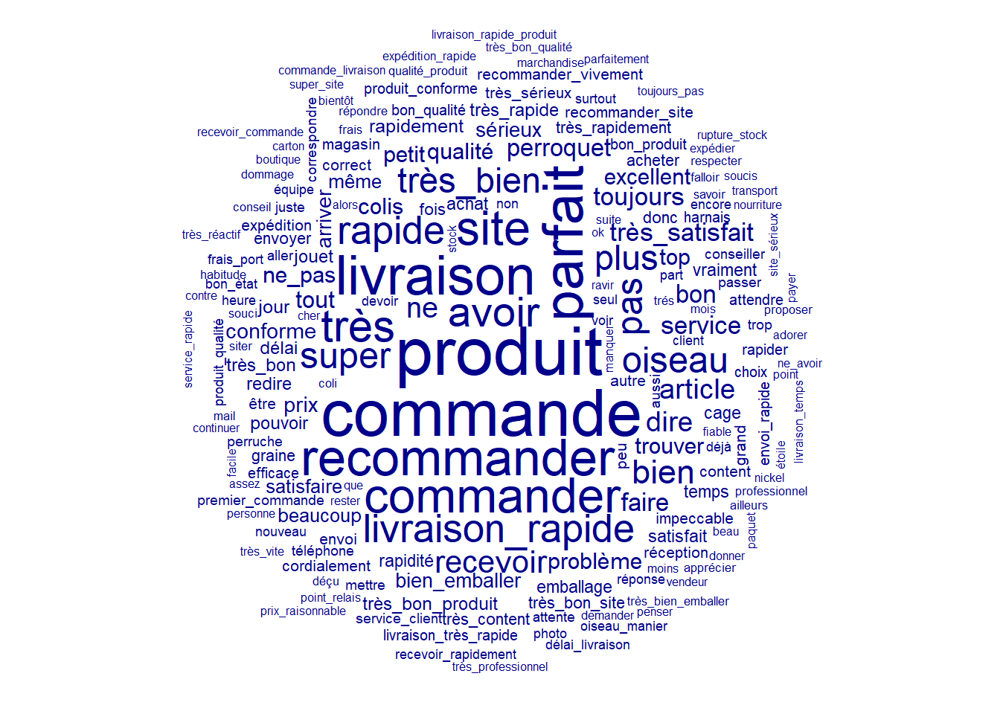
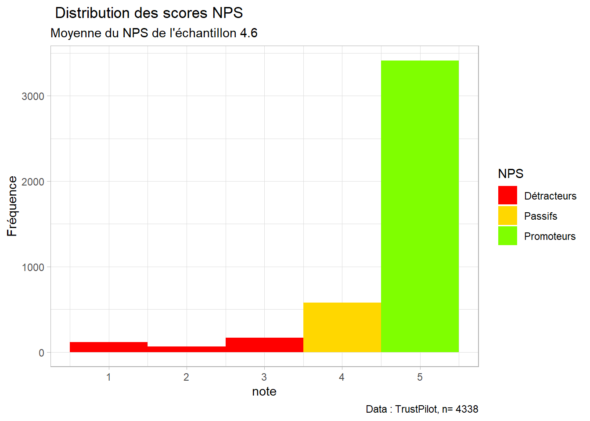
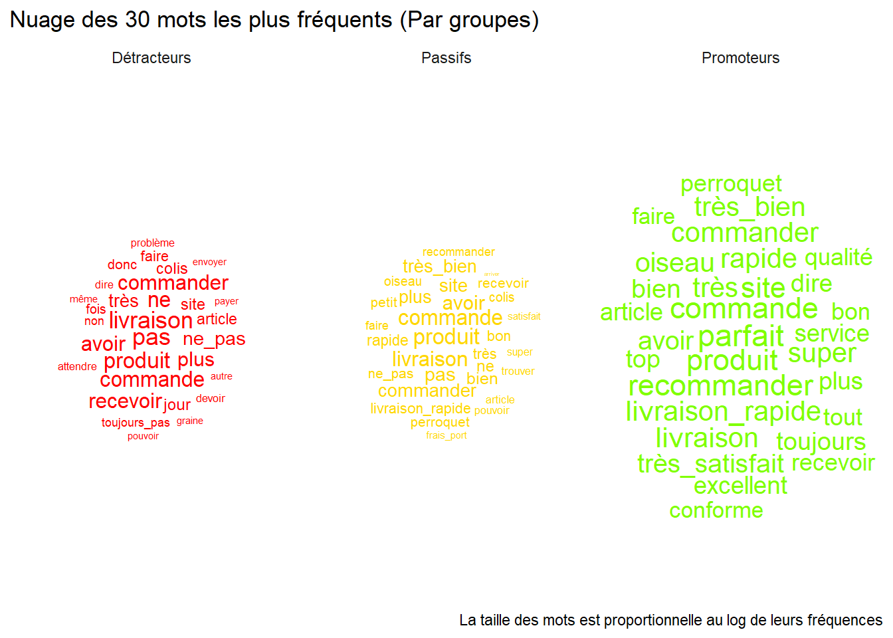
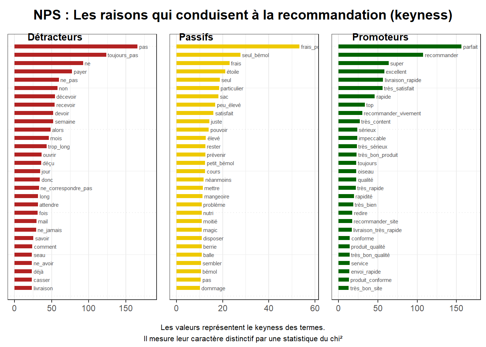

library(readxl)
library(tidyverse)
library(quanteda)
library(quanteda.textstats)
library(quanteda.textplots)
library(RColorBrewer)
library(cleanNLP)
library(ggwordcloud)5 Rappel sur les pré-traitements
5.1 Les données
data <- read_csv("data/data_trustpilot_oiseaux.csv")Rows: 4388 Columns: 7
── Column specification ────────────────────────────────────────────────────────
Delimiter: ","
chr (4): auteur, date, month, comments
dbl (3): id, year, note
ℹ Use `spec()` to retrieve the full column specification for this data.
ℹ Specify the column types or set `show_col_types = FALSE` to quiet this message.# cnlp_init_udpipe(model_name = "french")
#
# annotate<-cnlp_annotate(data$comments, verbose = 100)
# ann_token<-annotate$token
# write_csv2(ann_token, "annotation_oiseaux.csv")
# write_rds(ann_token,"annotation_oiseaux.rds")
ann_token<-read_rds("data/annotation_oiseaux.rds")5.2 Reconstruire le texte
data<-ann_token%>%
filter(upos=="NOUN"|upos=="VERB"|upos=="ADJ"|upos=="ADV")%>%
group_by(doc_id)%>%
summarise(text=paste(lemma,collapse = " "))%>%
inner_join(data, join_by("doc_id"=="id"))
corpus_new<-corpus(data, text_field = "text")
toks<-tokens(corpus_new)%>%
tokens_replace(c("produire", "conformer","colir", "tre", "livrer", "n"), c("produit", "conforme","colis", "très", "livraison", "ne"))%>%
tokens_remove(c(".",","))
colloc<-textstat_collocations(toks, min_count = 10, tolower = TRUE)
toks<-tokens_compound(toks, pattern = colloc[colloc$z>7,])
dfm<-dfm(toks)
head(textstat_frequency(dfm),50) feature frequency rank docfreq group
1 produit 604 1 530 all
2 commande 571 2 505 all
3 parfait 481 3 441 all
4 livraison 462 4 414 all
5 recommander 430 5 417 all
6 commander 407 6 362 all
7 site 395 7 356 all
8 très 370 8 321 all
9 avoir 337 9 293 all
10 rapide 315 10 303 all
11 livraison_rapide 311 11 306 all
12 super 282 12 254 all
13 oiseau 281 13 251 all
14 pas 277 14 226 all
15 très_bien 272 15 253 all
16 plus 266 16 231 all
17 bien 253 17 227 all
18 recevoir 231 18 210 all
19 ne 218 19 195 all
20 dire 201 20 190 all
21 article 200 21 177 all
22 très_satisfait 180 22 174 all
23 service 179 23 168 all
24 toujours 176 24 160 all
25 faire 176 24 152 all
26 perroquet 173 26 158 all
27 bon 170 27 158 all
28 tout 153 28 142 all
29 qualité 150 29 144 all
30 problème 150 29 137 all
31 ne_pas 147 31 131 all
32 trouver 145 32 137 all
33 top 145 32 138 all
34 colis 145 32 123 all
35 excellent 141 35 134 all
36 petit 137 36 125 all
37 conforme 132 37 127 all
38 prix 132 37 125 all
39 arriver 122 39 117 all
40 sérieux 122 39 116 all
41 bien_emballer 119 41 115 all
42 satisfaire 111 42 109 all
43 même 108 43 100 all
44 beaucoup 107 44 104 all
45 jour 104 45 103 all
46 rapidement 103 46 100 all
47 pouvoir 98 47 90 all
48 jouet 96 48 74 all
49 très_rapide 94 49 91 all
50 délai 93 50 86 alltextplot_wordcloud(dfm, max_size = 4, max_words = 200)
5.3 Analyse de keyness
Dans un premier temps, nous allons regarder le Net Promoter Score (NPS), puis nous étudierons les discours des promoteurs, détracteurs et passifs.
Tout d’abord, nous créons nos catégories en fonction des notes.
col<- c("red","gold", "chartreuse")
data<-data %>%
mutate(NPS=case_when(note<4~"Détracteurs",
note==4~"Passifs",
note>4~"Promoteurs"))
ggplot(data, aes(x=note))+
geom_histogram(binwidth = 1, aes(fill=NPS))+
labs( title= " Distribution des scores NPS",
subtitle = paste("Moyenne du NPS de l'échantillon",round(mean(data$note),1)),
caption = paste("Data : TrustPilot, n=",nrow(data)),
y = "Fréquence")+
scale_fill_manual(values=col)+
theme_light()
Puis nous réalisons un nuage de mots pour chaque groupe, afin d’avoir une idée de ce qui est exprimé.
dfm$NPS<-data$NPS
# docvars(dfm)
dfm_gp <-dfm%>%
dfm_group(groups = NPS)
# dfm_gp
stat<- dfm_gp %>%
textstat_frequency(n = 30, groups = NPS)
# stat
ggplot(stat, aes(label = feature)) +
geom_text_wordcloud(aes(size=log(frequency), color=group)) +
theme_minimal()+
facet_wrap(vars(group))+
scale_color_manual(values=col)+
labs(title="Nuage des 30 mots les plus fréquents (Par groupes)",
caption = "La taille des mots est proportionnelle au log de leurs fréquences")
Maintenant, nous nous intéressons à ce qui caractérise chacun des groupes par rapport aux autres, grâce à la mesure du keyness.
graph_promoteur<-textstat_keyness(dfm_gp, target = "Promoteurs")%>%
textplot_keyness(n = 30L, labelsize = 2, show_legend = FALSE,
show_reference = FALSE, color = c("Darkgreen", "gray"))+
labs(x=NULL)
graph_detracteur <- textstat_keyness(dfm_gp, target = "Détracteurs" )%>%
textplot_keyness(n = 30L, labelsize = 2, show_legend = FALSE,
show_reference = FALSE, color = c("firebrick", "gray"))+
labs(x=NULL)
graph_passif <- textstat_keyness(dfm_gp, target = "Passifs")%>%
textplot_keyness(n = 30L, labelsize = 2, show_legend = FALSE, show_reference = FALSE, color = c("gold2", "gray"))+
labs(x=NULL)
library(cowplot)
Attachement du package : 'cowplot'L'objet suivant est masqué depuis 'package:lubridate':
stampp<- plot_grid(graph_detracteur, graph_passif ,graph_promoteur, labels = c('Détracteurs', 'Passifs', 'Promoteurs'), label_size = 10, ncol=3)
title <- ggdraw() + draw_label("NPS : Les raisons qui conduisent à la recommandation (keyness)", fontface='bold')
note <- ggdraw()+ draw_text("Les valeurs représentent le keyness des termes.\nIl mesure leur caractère distinctif par une statistique du chi²", size=8,x = 0.5, y = 0.5)
plot_grid(title, p,note, ncol=1, rel_heights=c(0.1, 1)) # rel_heights values control title margins
5.4 Diversité lexicale et lisibilité
head(textstat_lexdiv(dfm)) document TTR
1 1 1.0000000
2 2 0.8620690
3 3 0.9000000
4 4 1.0000000
5 5 0.9268293
6 6 1.0000000head(textstat_readability(corpus_new)) document Flesch
1 1 24.440000
2 2 -4.095000
3 3 -8.278077
4 4 -10.755000
5 5 -7.977442
6 6 56.978462